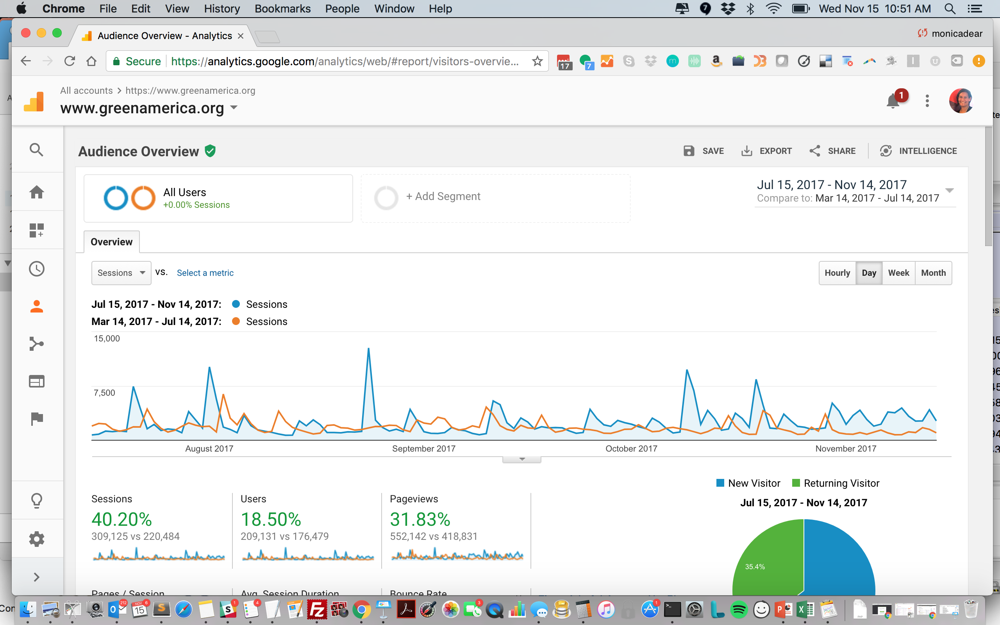
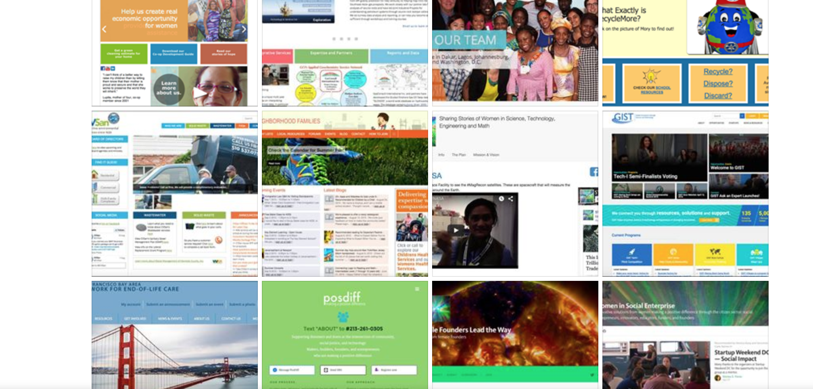

Statement
I’m interested in complex challenges on a global level around technology and access to information, and I’ve been supporting mission-driven organizations since 2001. I continuously strive to build products and services that make a positive difference, with several large-scale redesign and refactoring projects delivered for national nonprofits, government agencies, and community groups. Roles include:
Core Competencies
- director of digital products - develops roadmap and shares workflow for creating new digital products
- strategic integrator - understands and aligns needs of client, partners, internal team, technology resource people and products, and policy/content managers in order to support a successful outcome
- engineering manager - manages workflow for groups of 5-10
- data architect - responsible for database requirements (in conjunction with client), database design, optimization, and modeling, and “big-picture” thinking about how client requests convert to actionable items from engineering team
- project lead - communicative, patient, timeline-oriented, manages teams, leads scrums
- product manager - functional specifications, wireframes, user pathways, rapid deployment, analytics and reports
- full stack developer - PHP/mySQL since 2001, Drupal since 2008, Agile/scrum since 2012
- advisor - technical advice to non-technical people for new projects, sold one project
Typical Day
A) deep discussion re: client’s requests, as well as explaining/understanding client / organizational needs
B) specifying functionality and architecture: clarifying what can be done and suggesting solutions
C) managing: directing flow of scrums, specifying tickets, reviewing work, sign-off on incremental builds
D) producing: implementation / wireframing / database architecture / pilot project creation
E) communicating: presenting results, sharing analytics, supporting team and clients
Career Highlights
- October 2017 - Course instructor for Nonprofit Technology Network for Nonprofit Technical Professional Certificate - courses are “Advanced Data Management” and “Building a Culture of Diversity and Inclusion”
- June 2016 - present: Digital director for large-scale redesign of GreenAmerica.org, 90k monthly users ($215k Drupal 8, 76% increase in new online donations, 16% increase in direct visits, 80% increase in referral visits, 90k monthly users)
- January 2016 - present: Database architect and engineering lead for redesign of GistNetwork.org, a US Department of State-funded entrepreneurship challenge for international participants ($560k Drupal 7 in two phases)
- May 2014 - December 2016: Drupal 7 redesign for changemakers.com, 85k monthly users in the field of global social enterprise ($180k Drupal 7)
- 2004-2014: Principal producer, delivered 240+ websites over 10+ years of working with public agencies, membership groups, and businesses (Drupal 6 and 7)
- 2006-2012: As a founder, I built and sold a blog for success-oriented women "A Successful Woman"
- 2010-2017: As a co-founder, I launched an e-commerce store for home & fashion accessories "Gramercy & co."
- 2000: Policy analyst as part of a project to evaluate all community-based organizations serving children, youth, families for the City and County of San Francisco ($750k)
- 2001: Core team that launched the Odyssey Internet Treks by leading a pilot Mexico visit, traveling to 35 countries for 18 months, and creating educational content online
- Written three trade books on building community through website engagement strategies, and I also blog, post articles, and speak on panels, videos, and podcasts
I am interested in connecting over your current needs and look forward to discussing if we’re a fit. My passion is to use my technology skills in support of people, groups, and organizations who are making a positive difference.
Sincerely, Monica S. Flores
Overview
+ Mission: to build community, foster connectedness, & use my tech skills to create a better world
+ Unique skill: translating business process needs into effective solutions, building solutions to solve pressing problems, communicating with teams to drive long-term initiatives
+ Turns ideas into reality: clarifies needs, develops plans, tests assumptions, implements production
+ Drives progress: understands goals, coordinates efforts, tracks schedules, explains documents
Primary Experience
Director of Digital Products
Green America
Washington, DC, June 2016 - present
Consolidates all existing websites and build new platforms to manage the organization's digital properties, including a quarterly magazine, several print publications, and a national network of green businesses, 90k monthly users

- In-house developer for ongoing web needs, with access to and oversight of external contractors
- Works with staff to maximize SEO and stakeholder engagement
- Synthesizes needs & requirements from internal/external stakeholders into cohesive product roadmap
- Ensures that internal stakeholders have support to successfully learn and use digital technologies
- Responsible for budgeting for technology needs as well as tracking expenses to budget
- Manages external resources and timelines to balance requirements against ROI
- Pulls together input from users, executive leadership, staff with content expertise, and online communications team, and turns these into a thoughtful and coherent vision and strategy for digital
- Third-party integrations: Salsa, Raiser's Edge, Charity Engine, Wordpress, ActOn, Joomla
Managing Director
10K Webdesign
Hawaii & California, July 2004 - present
Lead developer, producer, coder, liaison on 240+ websites for clients like SOCCOM Princeton (research group, $23m 5-year budget), Castro Valley Sanitary District (government, $11m annual budget), West Contra Costa Integrated Waste Management Authority (public agency $4.5m annual budget)

- Client-facing manager: Identified process, developed standard operating procedures, created workflow
- Full stack Drupal developer: produced all database architecture, code, installation, build out, themeing for versions 6/7/8
- Ability to configure Drupal and create custom Drupal modules using the core API
- Ability to integrate Drupal modules with external systems (e.g. Salesforce, Mailchimp, Analytics)
- Ability to use common Drupal modules such as Views and Panels
- Understanding of object-oriented architecture and design
- Experience with best practice release management methods and other key concepts (Agile)
- Experience developing custom themes for Drupal
- Knowledge and experience of relational databases and mySQL
- Fluent written and spoken English
- Experience in distributed, team-oriented, project environments
- Heavy use of communication skills, time management, and critical thinking
- Managed project milestones, kept team on track, ran scrums
- Scoped projects, listed deliverables, defined specifications, assessed user roles
- Project manager (designers, developers, themers, content editors, SEO managers)
- Organized DrupalCamp Hawaii 2011
Product Team Lead, Web Developer
Ashoka Changemakers
Arlington, VA, February 2014 - December 2016
Participated and led team that delivered a redesign and refactoring of a Drupal 7 site, implemented scrum to roll out feature requests for changemakers.com, 3 engineers supported ~40 coordinators, managers, operations, & executive leaders; 85k monthly users, $2.5mm annual budget
- Identified functional specifications, evaluated potential solutions, installed/wireframed/themed site
- Views, content types, reports, documentation, and training for multiple levels of users
- Third-party integrations and workflow tools: agile, Firebug, Analytics, Slack, Jira/Fisheye, Confluence, SequelPro, drush, Sublime, Git, TeamworkPM, Skype, Hangouts, PHP/mySQL, Google Drive, UXPin, LucidChart, Salesforce, Pantheon, Trello, Assembla, localization
Policy Analyst
JMPT Consulting Inc.
San Francisco, August 2001 - July 2004
Part of team that delivered a large-scale evaluation of a department for City & County of San Francisco
- Managed 18-month outcomes-based evaluation, strategic planning, and technology project for San Francisco County Department of Children, Youth, & Their Families
- Supported 100+ community-based organizations, 35 subcontractors, 3 partners
- Conducted qualitative/quantitative evaluations based on focus groups & site visits
Programmer/Analyst
UC Berkeley Center, Latin American Studies
Berkeley, January 2001 - June 2001
- Acted as primary web developer & site updater for nationally-recognized center
- Researched existing needs, created content management system for digital assets
Program Director
The Odyssey Internet Treks, 35 countries & Team Lead, Mexico City
San Francisco and internationally, August 1998 - August 2000
- Researched, photographed, and wrote two articles per week for 18 months (1500 words and 10 photos each) abroad, and returned to home office to write grants, interview, manage volunteers, and code
- Conducted online events, features, interviews (3 Nobel Peace Prize Laureates, 2 Presidents, 50+ grassroots groups)
Partner Projects
Advisor, MAAN Softwares Inc.
January 2017 - present:
http://www.maansoftwares.com
Web and app development, 40 person team, provides advisory services
Co-Founder and CTO, Gramercy & Co.,
January 2011 - March 2017
Launched e-commerce for luxury goods, 16x growth in 3 years
Founder, A Successful Woman
September 2006 - February 2012
http://www.asuccessfulwoman.com
Created a hobby blog that grew to 10,000 users/month, acquired 2012
Other Experience
Mentor
Access to Software for All People
Berkeley, December 2000 - June 2001
- Mentored Berkeley High School students to create websites for local organizations
Multimedia Software Developer
Opus Technologies
San Diego, January 1996 - August 1998
- SBIR Phase I and Phase 2 Grant projects
- Designed, developed, edited, did QA, and wrote documentation for Braille projects
- Created musical examples using MIDI files and created WinHelp clickable digital books
Environmental Educator, Slide Ranch
Marin County, August 1995 - December 1995
- Taught students on working ranch
Community Health Worker
Saban Clinic (formerly Los Angeles Free Clinic)
Los Angeles, August 1994 - August 1995
- Triaged, provided medical intake, assisted doctors, and dispensed medications for community-based clinic focused on STDs, women's health, mental health, outreach, and counseling
Community Involvement
- Girl Scouts Troop LeaderTroop 60068 Arlington (2017-2018)
Troop 4163 Arlington (2016-2017)
Troop 428 Arlington (2014-2015)
Troop 1307 San Diego CA (2013-2014)
- STEM Daisies, Increasing STEM women's visibility through video (2014-present)
- Vice President, PTSA, Mesa Verde Middle School, 2012
- Emergency Room Volunteer, Cedars-Sinai Hospital, Los Angeles, Saturday nights, triage department 1994-1995
- Pianist, Cornell University Religious Services, 1990-1994
Education
B.S. Environmental Systems Technology,
Dept. of Agricultural and Biological Engineering, Cornell University, 1994
PERSONAL BACKGROUND
Likes running, travel, baking, nature walks, reading
Lived in Canada, Florida, Southern California, upstate New York, Oakland, Hawaii, Virginia
Marathoner ~ Musician ~ Lifelong learner
Effective, results-oriented, and collaborative
Practices kindness
Passionate about making a difference
Modules: Cloudflare, Apache Solr, Acquia, Views, Panels, Entity, Entity Reference, Bootstrap, CK Editor, Media, Calendar, GMap, Location, Feeds, Chaos Tools, Token, Pathauto, Webform, jQuery Update, Google Analytics, Rules, Features, Context, Integrations: Firebug, Analytics, Slack, Jira/Fisheye, Confluence, SequelPro, drush, Sublime, Git, TeamworkPM, Skype, Hangouts, PHP/mySQL, Google Drive, UXPin, LucidChart, Salesforce, Pantheon, Trello, Assembla, localization, Open Graph (FB Login, OneAllSocial), Twitter API, MailChimp, SalesForce, Wild Apricot, Google Maps API, Analytics, PCI, Authorize.net, PayPal, SSL, AJAX, JQuery, PEAR, AddThis, CK Editor, TinyMCE, Vimeo, YouTube, vCard, Sitemaps, RSS, Google, Amazon Catalog Search,Wordpress, Joomla, ActOn, Charity Engine, Raiser’s Edge, Salsa
Project Portfolio available at monicasflores.com
- 16 years as a hand-coding web developer (HTML5/CSS3/XHTML/Javascript)
- 12 years experience with PHP: get/post, customized functions, integrations
- 12 years experience with mySQL: insert/edit/delete, client reports, queries
- 6 years knowledge of LAMP stack management
- 9 years Drupal back-end implementation & front-end themeing template files
- 5 years project management with agile process
- 3 years responsive / mobile-ready themeing
Additional Links:
Drupal.org profile:
https://www.drupal.org/u/monicadear
Drupal groups profile:
https://groups.drupal.org/user/33123
Github with samples:
http://github.com/monicadear
Drupal DC Meetup Organizer:
http://www.meetup.com/drupal-dc/members/?op=leaders
Recent Case Studies: